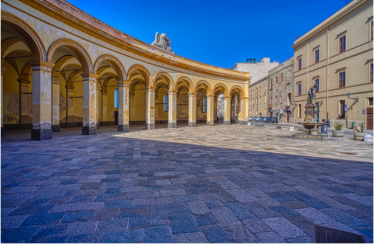
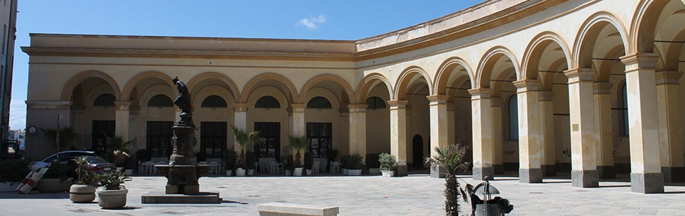
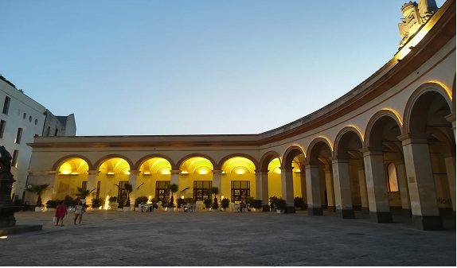
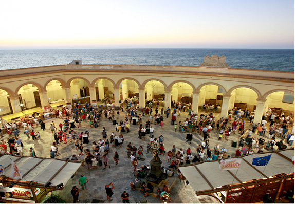

Tra mare e tradizione
Piazza Mercato del Pesce si trova nel centro storico di Trapani ed è uno dei luoghi più vivaci della città. Conosciuta soprattutto per il suo storico mercato ittico, la piazza rappresenta un punto di riferimento per cittadini e visitatori, offrendo un’atmosfera tipica della vita quotidiana siciliana.
La piazza è famosa per il mercato del pesce, dove da decenni i pescatori locali vendono direttamente il pescato fresco del giorno. Questo luogo non è solo un mercato, ma un vero e proprio centro culturale della città, che racconta la tradizione marinara di Trapani e la passione per i prodotti del mare.

Tra palazzi storici e dettagli
Intorno a Piazza Mercato del Pesce si trovano edifici storici che ne delimitano gli spazi pedonali. Le facciate delle case e dei palazzi circostanti mostrano la tipica architettura siciliana.
Balconi in ferro battuto e colori caldi, creando un contesto pittoresco e autentico immergendo il turista in un vero e proprio spettacolo.

Vita quotidiana e socialità
La piazza è frequentata non solo dai venditori e dai residenti, ma anche dai turisti che vogliono immergersi nella cultura locale. Piccoli negozi animano la piazza, trasformandola in un luogo di incontro, dove la tradizione si fonde con la vita contemporanea.
Passeggiare per Piazza Mercato del Pesce significa vivere l’autenticità di Trapani: dai colori dei banchi del mercato al profumo del mare, fino ai suoni della città che si risveglia ogni giorno. È una tappa imperdibile per chi vuole conoscere da vicino il patrimonio culturale e gastronomico della Sicilia occidentale.
